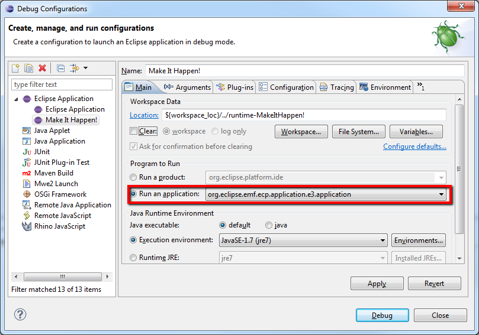

Home
Home Download
Download Documentation
Documentation Support
Support Getting Involved
Getting Involved Contact
ContactGETTING INVOLVED
Everyone is invited to getting involved with the EMF Client project. Before you plan any kind of contribution, it is a good idea to contact the project team.
- Writing bug reports
Please provide a short and concise explanation of the problem, a snippet to reproduce the issue, ideally a JUnit test case that outlines the expected behavior. You are also invited to enter feature requests. Please use Bugzilla to report bugs and feature requests.
- Providing a patch to fix a bug or add a feature
Please attach your patch to the bug report in question or create a new report using Bugzilla.
- Contribute documentation
If you found something which is not documented yet, please share you knowledge with other users. Please contact us, to find the appropriate place to add your documentation.
Developer Resources for the Juno version of EMF Client Platform
- Step 1: Download and install Eclipse
Please use the Eclipse Modeling Tools from the Eclipse downloads section.
- Step 2: Additional Plug-Ins
Install Checkstyle Plug-In from either the Marketplace (Help->Eclipse Marketplace...) or from the Checkstyle Updatesite.
- Step 3: Check-out the source via GIT
If you want to use GIT as an anonymous user (read only) please use the following URIs:
(git://git.eclipse.org/gitroot/emfclient/org.eclipse.emf.ecp.core.git)If you want to use GIT as a committer please use the following URI:
(ssh://committer_id@git.eclipse.org/gitroot/emfclient/org.eclipse.emf.ecp.core.git)Select only the "master" branch. Press "Select all" and proceed with the import.
Please refer to this tutorial to clone GIT repositories. Now, you can import the projects from the cloned GIT repository. See here how to import projects from a GIT repository.
- Step 4: Set the target
Locate and open the ecp.target file in the _target bundle imported from the repository. When it is resolved, set this definition as the target platform. Please note that the resolution of the target platform may take some time at the first time.
- Step 5: Start ECP
For testing purposes, you can use this example model. Import it into your EMFCP workspace.
Now you can start the model with EMF Client platform by creating a run configuration. This run configuration will automatically also contain the eample model from your developer workspace. To create a run configuration, select the Eclipse menu Run → Run Configurations.
Create a new run configuration and run the application org.eclipse.emf.ecp.application.e3.application, as shown in the following screenshot.

Now you can start your application; it should present you with an empty EMFCP workbench containing the example model.